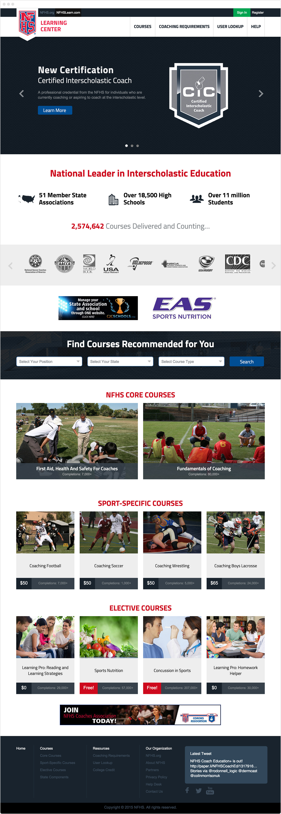
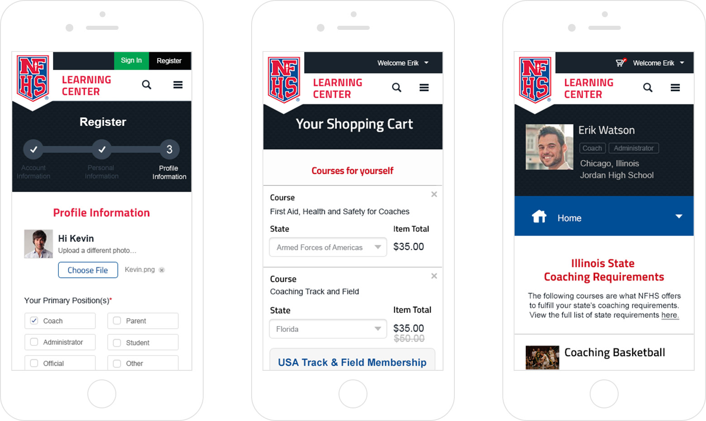
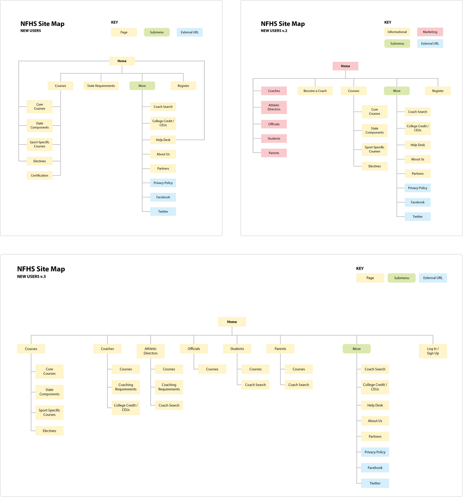
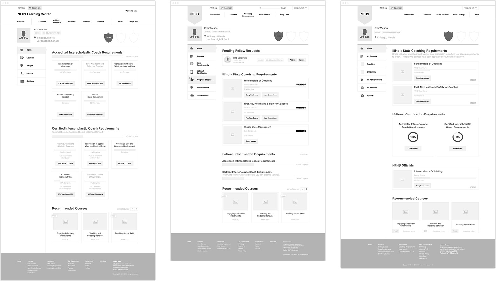
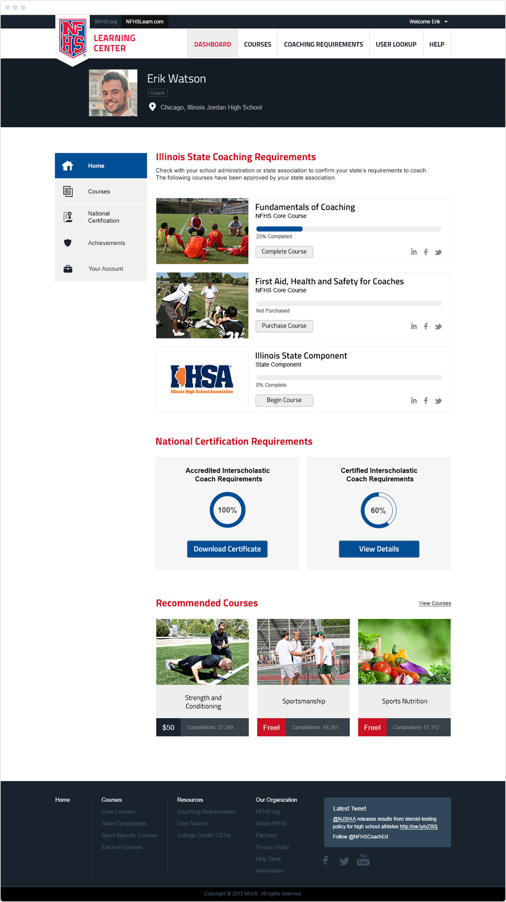
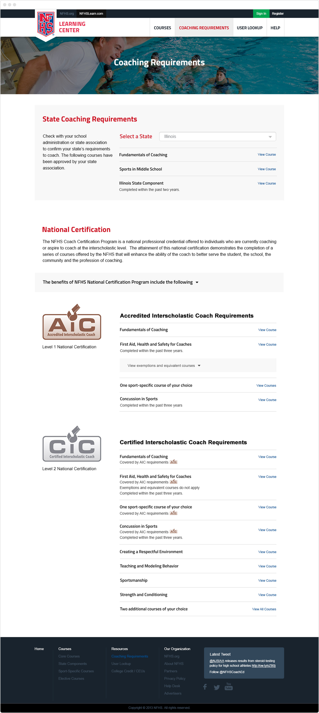
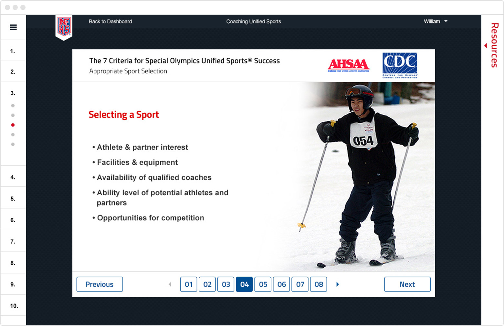
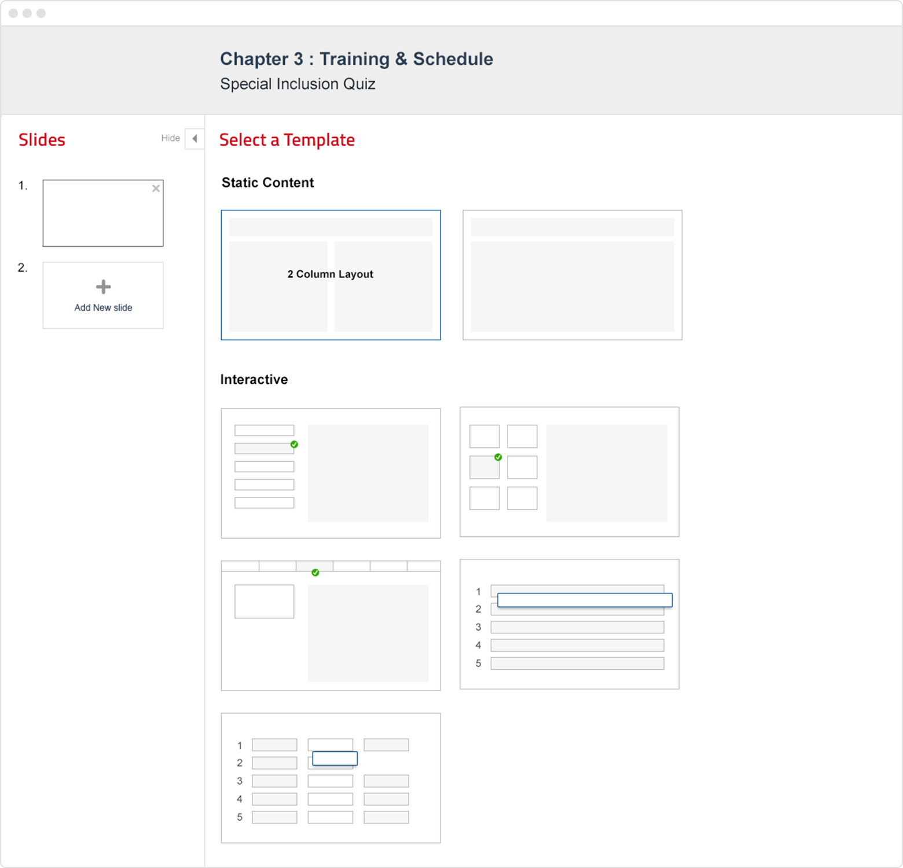
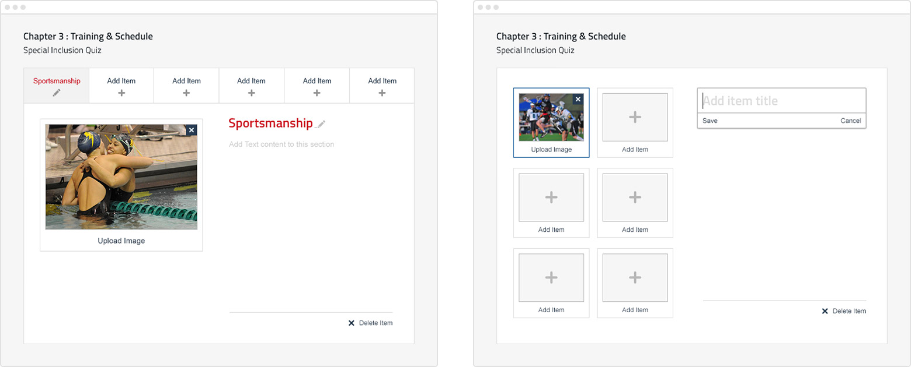

The challenge
If you wanted to coach high school athletics, you would need to be sanctioned in your state to do so. In order for that to happen, you would be required to pass specific courses covering coaching fundamentals and sports safety, among other topics. These courses are completed through the NFHS. They have relationships with 51 member state associations across the country, and many of them are quite complex—each state has its own opinions on how high school sports and activities should be governed, and it was our job to create a pleasant, seamless experience for all users to take their courses, regardless of their state. Though coaches must only meet a minimum level of requirements, we were also tasked with providing the facility for coaches to continue their learning through supplementary courses.
The NFHS Learning Center home page.
Mobile responsive views for registration, checkout, and the user dashboard.
Considerations of a national platform
This product required a tremendous amount of research. We asked our client a countless number of questions, and it seemed like the more information we gathered, the more questions we uncovered. There were so many edge cases we could not ignore, yet at the same time, had to keep the experience fluid for our primary users. We worked and reworked multiple user flows, until we found ones that were both the simplest for our users while meeting the established requirements.
Early versions of the site's information architecture.
Variations of the wireframes for the user dashboard.
Giving users what they want
Ultimately, users who visit this site want to either fulfill their coaching requirements, or to make sure the staff they manage fulfills them. This process be broken down into a few essential steps:
- Finding the courses you are required to take
- Taking the courses
- Providing proof that you completed your requirements
Searching for courses. Filters and a search feature help users find exactly what they need.
To facilitate this, we implemented usability improvements across the site. We created a brand new dashboard for every user, and using information collected during registration, we presented them with the exact courses they were required to take. Using the same dashboard, users could monitor their progress across all of their courses, as well as access certificates of completion when they were done. Administrators could also buy courses in bulk for their coaches, and monitor the progress of each coach as they complete their courses.
The home page of the user dashboard.
For unauthenticated users, we created a basic course requirements page, for users to quickly identify their requirements by state. We paired that with a course listing page, complete with search and filtering functionality to find courses with ease.
Finding your coaching requirements.
By standardizing the way courses were built, we were also able to drastically improve the course-taking experience by making it much more cohesive across different courses. We made the entire experience more immersive, focusing on the content, while still providing the facility to jump between sections of the course as well as access any supplemental resources.
An example of a slide inside a course.
Building the courses
One major component of this project was converting all of the existing courses to the new platform. To handle this, we first created a course management tool, which allows NFHS staff to create courses from scratch, edit them effortlessly, and manage which ones are published to the site. Previously, NFHS had to go to a contractor for any new courses or edits they wanted to make, which was both expensive in time and money.
Selecting a template in the course builder.
Building interactive slides.
The largest issues we faced with legacy courses revolved around lack of consistency, both from a technical and content perspective. Some courses were built in Flash; others in HTML. Some courses had specific custom content or exercises that were one-off builds. Our team went through every course, documenting everything we came across. We then used that information to create templates that courses could be built from, which gave NFHS the flexibility to build creative, engaging courses, while maintaining a structure that could be efficiently managed at scale.
Reflections
Even though the vision may seem straightforward, a product with a massive user base is a significant undertaking. Jumping into this, we knew we would need to do a ton of in-depth research, but I don’t think we realized how complex the domain was until we were in the thick of it. In addition to that, the legacy data we were dealing with was horrendous; it was extremely difficult to dig through decade-old servers, dealing with unorganized files that often ended up being corrupt or otherwise unusable. There was no way to foresee any of these issues without simply diving in. Research is so important. I could not stress this enough.
Scope creep is a well-known demon in product development. It’s unavoidable, as circumstances change and requirements pop up—but as long as it’s constantly managed, things will stay in control. In hindsight, there were some features that were not crucial, but rather were “nice-to-haves.” It’s so easy to project eight months ahead thinking you have wiggle room for this awesome feature, but when the time comes, it’s much tougher to go back on your word after making a commitment. Save the nice-to-haves for when you’re sure you have time for them. Make sure you can launch.
Building a learning management system from scratch is no easy task, but the challenges that come from it are so rewarding when you get them right. There is so much potential when done well, and so much room for growth. Online education is definitely a growing trend in tech, and I’m excited to see where it goes.